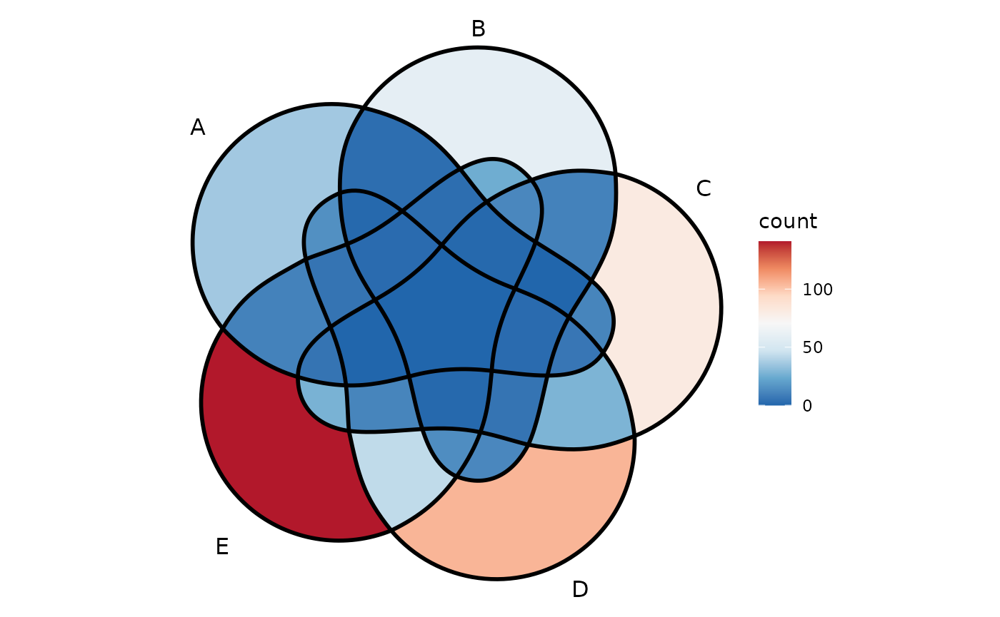

vignettes/venn-plot-with-more-than-four-sets.Rmd
venn-plot-with-more-than-four-sets.RmdWith ggVennDiagram version less than 1.0, it only support 2-4 set Venn. By importing the polygon from venn , ggVennDiagram now supports 5-7 sets Venn.
genes <- paste0("gene",1:1000)
set.seed(20210507)
x <- list(A = sample(genes,100),
B = sample(genes,150),
C = sample(genes,200),
D = sample(genes,250),
E = sample(genes,300),
F = sample(genes,350),
G = sample(genes,400))
ggVennDiagram(x, label = "none", edge_size = 2) + scale_fill_distiller(palette = "RdBu")
ggVennDiagram(x[1:6], label = "none", edge_size = 2) + scale_fill_distiller(palette = "RdBu")
ggVennDiagram(x[1:5], label = "none", edge_size = 2) + scale_fill_distiller(palette = "RdBu")
Although ggVennDiagram supports 5-7 sets Venn diagram, I don’t encourage to use them in scientific publications as it is difficult to separate the border of different sets in the plot (even with thick edges), especially for 7 and 6 sets Venn. Upset plot is a possible solution for these datasets. You may check a discussion of the Applications of Venn, Euler and Upset plot.